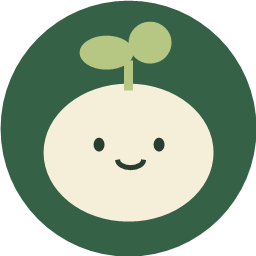

芽芽计划
Plan Every Day
−
□
×
YOUR EVERYDAY, A LITTLE LIGHTER
我的今天
.
♧
一步一步，今天也会很好。
先写下一件想做的小事吧。
·ᴗ·
✧
＋
添加
↵
安排到
先放收集箱
Enter 连续记录
⌕
全部优先级
紧急
重要
普通
多选
已选 0 项
今天
明天
安排
收集箱
☀
今天
▤
收集箱
▦
安排
▧
记背
✓
完成
⚙
设置
安排这件事
×
今天
明天
收集箱
选择日期
安排到这一天
今天先专注这三件事
若想加入新的重点，选择一项替换。原任务仍会保留。
暂时不换